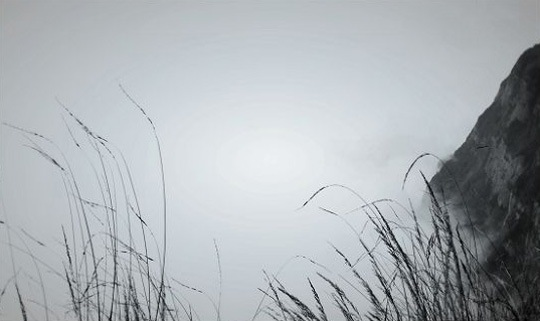

10月2日去的乐山大佛，比希望中的少了许多的兴奋，由于去得稍晚，游人众多，我们只在大佛头顶上转转就回去了。相比起来10月3日去的峨眉山自由性更大，因此我们倍加的期待，早早地就出了门，并在到达了峨眉山后选择了徒步上金顶，然后第二天坐车下山。在我看来，攀登的感觉要比下山有意思得多，也会让我们第二天看到日出时的心情会多几分激动兴奋，当然前提是老天要作美，因为并不是每天都可以看到日出。 开始爬山，我们一路上走走，玩玩，拍拍照，看看猴子，倒也觉得轻松，耗费了不少时间，并没有意识到今后路程的艰苦。“双桥清音”黑水白水两岸，双飞桥两边略显凌乱，古人曾经独自静享的那份“响彻双桥若瑟琴”的“清音”早已被喧哗的人声所污染。想必从前的古人定是在月朗风轻之夜，山色朦胧如黛，万籁俱静之时，独坐于洗心台上，赏似雾非雾的水色，听悠扬于心的“清音”。只可惜这般景致与心情在今日实在难以寻觅。再过 一线天，突兀的青色山石挤到小道上，原本狭窄的山路索性只剩下一半的宽度。抬头是两山夹缝中的苍天，低头是山间流淌的清泉。往前是重峦叠嶂中的 黑龙江栈道，往后是消失在丛林的清音阁。 再往上爬，那些旅游团的，那些带着小孩看猴子的游客基本都已经返回，路上一下就只剩下三三两两的年轻人，也才突然有了登山的感觉。从 洪椿坪开始就丝丝缭绕的雨雾完全没有化开去的意思，雨滴反而愈来愈大，汗水已经和雨水融在一起，停下来便觉得冷。山路两旁，一边是布满青苔野草也常有野花盛开的峭壁，一边是灰蒙蒙的沿着悬崖向山下延伸的雨雾。已经无法分清环绕我们四周的是雨形成的雾，还是雾里落下的雨，或是本来雨和雾就是同一物的不同状态而已，只是在这里，你才最最接近它们相互转化的那个临界时空而已。在这种时候，你会觉得眼前一片迷茫，内心却清醒透明。路上只有我们俩人，撑起伞，徜徉在山间湿漉漉的青色石阶上，而我们今晚的目的地是2000多米海拔的 洗象池，希望在那找个地方落脚，明天一早再直上金顶。

接下来一拐一歇，好不容易熬到走完了据称峨眉山最考验徒步驴友体力和耐力的九十九道拐，我们抵达 九老洞。此时已经是下午5点过，问登记爬山者资料的老者，知道前去洗象池还有两个小时的路程，此时天色已经灰暗下来，山间也愈发地潮湿了。这时已经没有了刚开始在山脚下的兴奋劲，相机已经装包里没怎么再拿出来了，也不再留恋两边的风景，心里只想着早点到洗象池住下。看不到头的山路上只有我们两个人，山是那么的大，路旁的悬崖又是看不到底，天越来越暗，心里越来越慌，越来越急，面对着大自然这样的景象，才觉得自己多么渺小。当你没有了古人爬山时的那份闲情雅致，就有人打你的主意。有开价“300块，抬你上去”的抬滑杆的汉子，还有出售4块钱一根竹子，15块一个小电筒的小店主。实在看不清夜路的我们只好拿了个电筒继续前行，向着不知道还有多远的目的前进。手电的光非常微弱，窄窄的山路也就只能照到路中间一小块地方，两旁是什么，我们都不得而知，也不敢拿着电筒乱晃，怕把体格是北京动物园猴子几倍大的峨眉山胖猴晃醒了，在这个环境下，我们是如此的渺小，完全不是对手。

就这样昏昏暗暗的一束光带着我们上了数不清的阶梯，经过了一个又一个小店，当我们看到名为“洗象池饭店”的小店时，心中悬着的大石才踏实落地，旁边店主吆喝和几个游客的对话一下把我们心中的阴霾扫清，吃了碗6块钱热腾腾的面条，温暖无比，路途中的同伴，在这个时候显得是多么的重要，人生何尝不是如此。前方不远，洗象池寺院的灯火，便是我们今晚落脚之地……